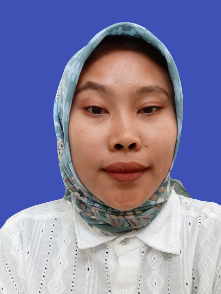

Tentang Saya
Saya mahasiswa Sekolah Tinggi Teknologi Terpadu Nurul Fikri semester 5 teknik informatika yang memiliki jiwa kepemimpinan yang tinggi, disiplin dan manajemen waktu yang baik...

Riwayat Pendidikan
-
Sekolah Tinggi Teknologi Terpadu Nurul Fikri (2022 - 2026)
S1 Teknik Informatika
-
SMK Avicenna mandiri (2019 - 2022)
Teknik Komputer Jaringan